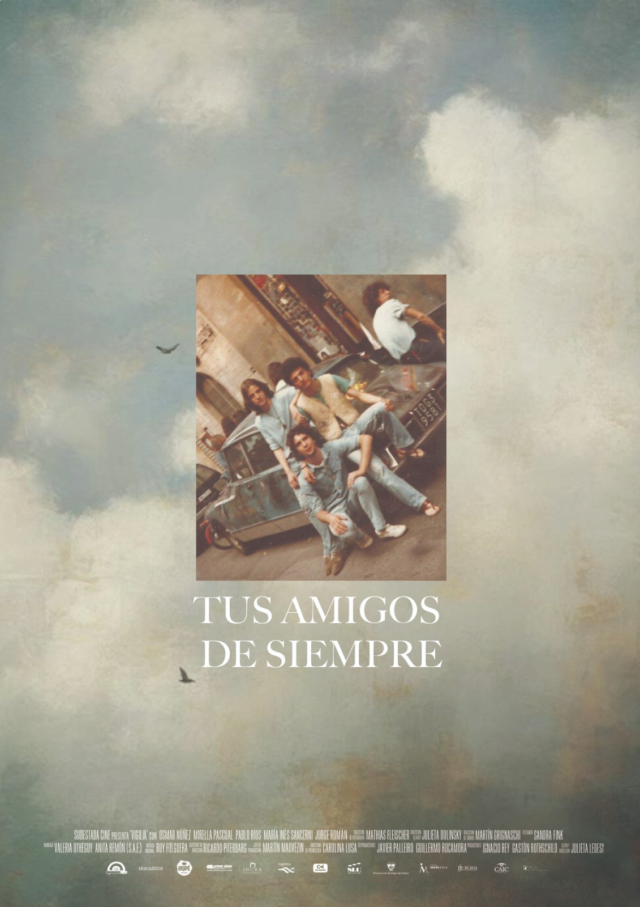

EL CÍRCULO
FILMS
SERIES
TEATRO
EQUIPO
CONTACTO

EL CÍRCULO
SINOPSIS
Es una serie teatral y vivencial de 3 episodios que explora la muerte misteriosa de Andy, un miembro de un grupo de amigos de toda la vida en el pueblo de Manubens. Después de su última reunión mensual, Andy aparece muerto en un campo de naranjas. Cada episodio presenta la perspectiva de un amigo diferente, revelando secretos y traiciones que cuestionan la naturaleza de esta amistad y señala a uno de los amigos como posible asesino. La narrativa es interactiva y no lineal, permitiendo a los espectadores elegir el orden de los capítulos y construir su propia versión de la verdad.
ESTADO DEL PROYECTO
En desarollo.